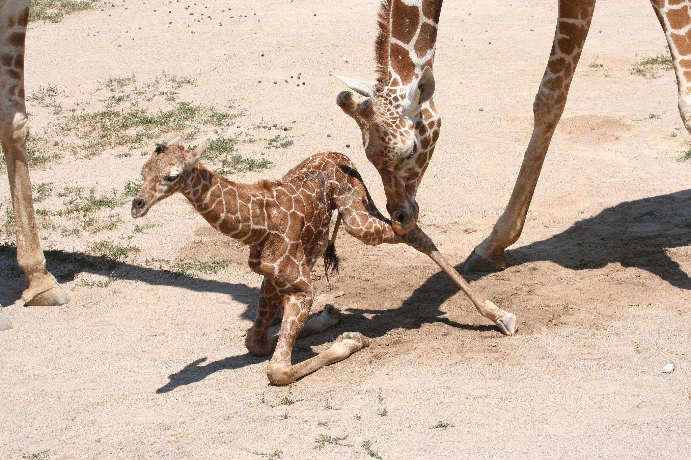

Las jirafas se reproducen de manera sexual y normalmente tienen una sola cría.

El embarazo de una jirafa dura aproximadamente 15 meses.
Después de ese tiempo nace una sola cría.
Las jirafas bebés nacen de pie y caen al suelo al momento del parto.
A los pocos minutos ya pueden levantarse y caminar.
La madre protege y alimenta a su cría durante los primeros meses de vida.
Las crías permanecen cerca de su madre para mantenerse seguras.
Las jirafas alcanzan la madurez en varios años.
Los machos suelen competir entre ellos para poder reproducirse.
Una jirafa recién nacida puede medir casi 2 metros de altura.